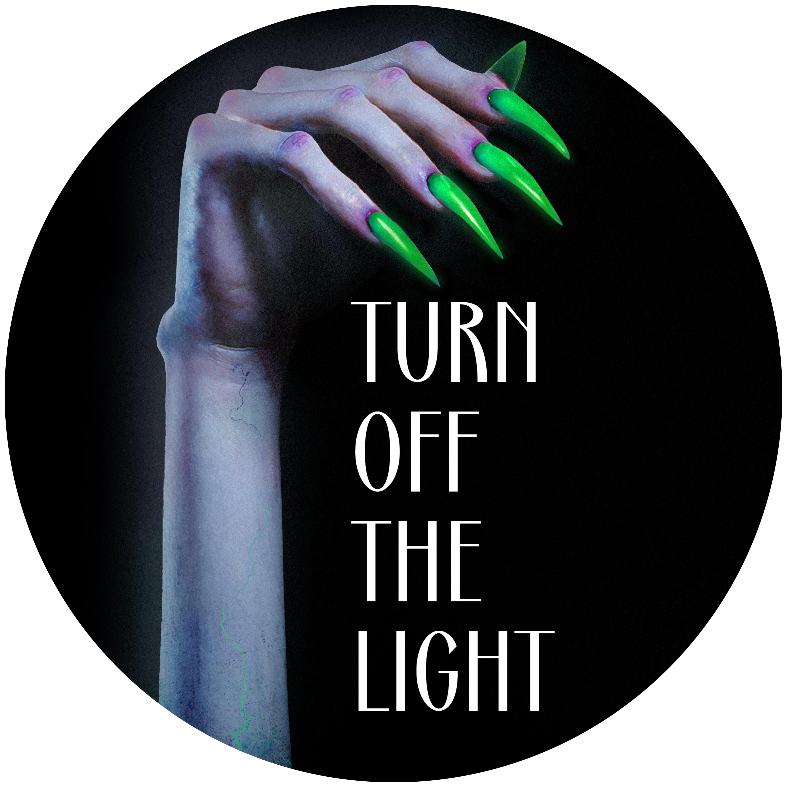

Turn Off the Light is the second studio album by German singer Kim Petras.It was released on 1 October 2019 and originally through her own label, BunHead. The album was originally supposed to be released in two volumes, Turn Off the Light, Vol. 1 and Vol. 2 – although it was ultimately released as a full-length studio album comprising the eight songs from the first volume and nine new songs recorded for the second volume. Turn Off the Light received positive reviews from music critics, who praised its production, lyricism, themes and Petras' vocal performance. On October 23, 2020, Petras announced that she would be releasing a third and final Turn Off the Light volume in October 2021. She shared that the reason for the release date was her desire to perform the songs live for her fans upon release, something she couldn't do if it was released in 2020 due to the ongoing COVID-19 pandemic. "I can't do it if I can't perform it live for you guys, immediately. I have to. It needs to be fresh, and there's a bunch of stuff I want to do to make it really epic." Petras released the single "Party Till I Die" immediately following the announcement of the third installment.
Turn Off The Light • Kim Petras
